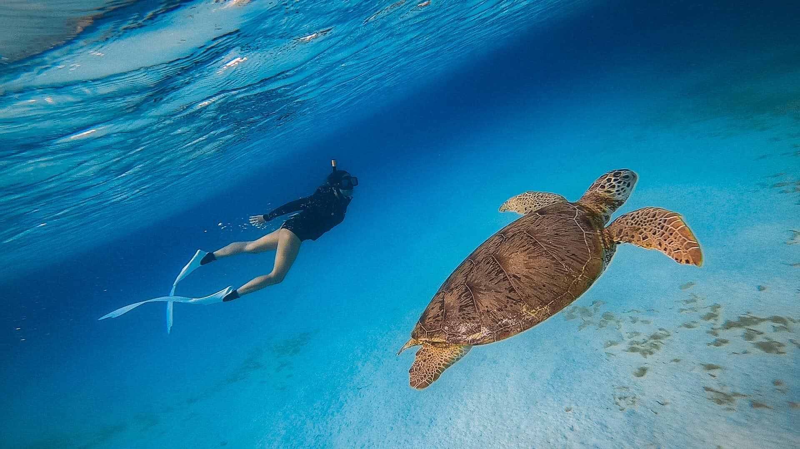

Interests
Apart from being a web developer, I enjoy most of my time diving
underwater. I am a Molchanovs-certified freediver. I've been afraid of the deep blue sea for as long as I can remember. It was my greatest fear since childhood because of a drowning history. Freediving is my gift to myself on my 30th birthday. After I graduated, it feels surreal wearing just a mask, long fins and then dive deep! I guess I finally conquered my own demons. When I'm few meters underwater, I hear silence, I can think clearly, my senses are heightened, and it feels like I'm flying. My eyes are feasting on all the beauty the world underneath has to offer.
During the warmer months, our family enjoys backpacking and
camping in nature. We spend the whole day homeschooling for our kids academics, and lifeskill drills for their hollistic learning. They haven't been enrolled in any school since birth, I am their first teacher and will continue to do so. We follow Charlotte Mason curriculum and not the traditional school method. We love reading literature and history, playing piano classics, recreating Van Gogh's painting, baking lasagna, doing macrame as our handicrafts drill, playing chess, going out in nature, and hunt for something to look at under a microscope. Currently, I spend a large amount of my free time diving the internet to learn about programming.
